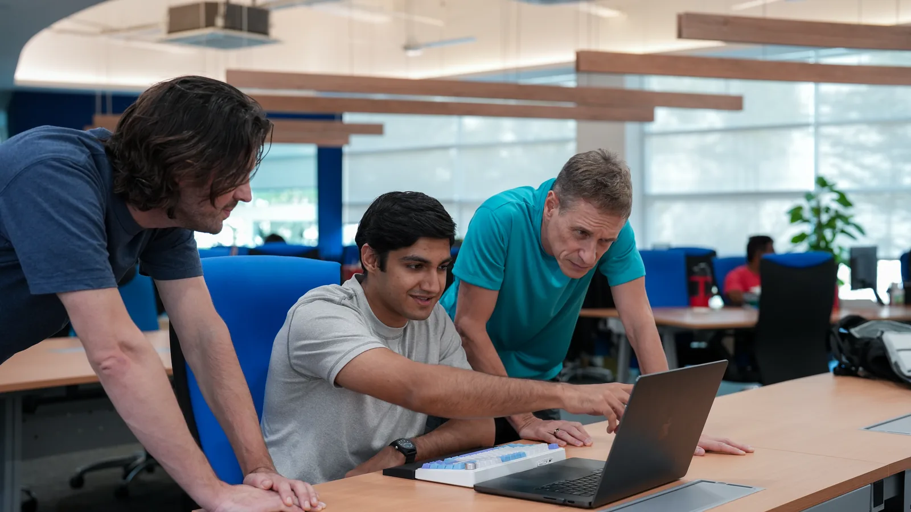
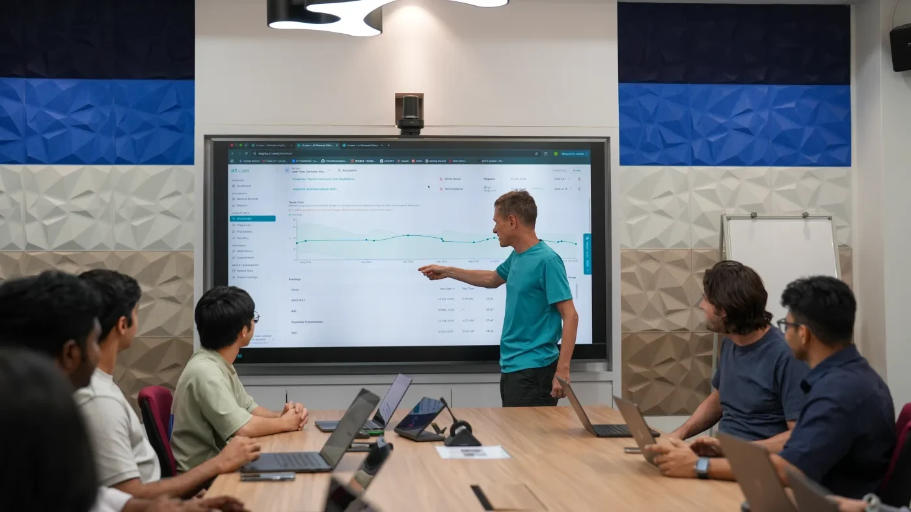
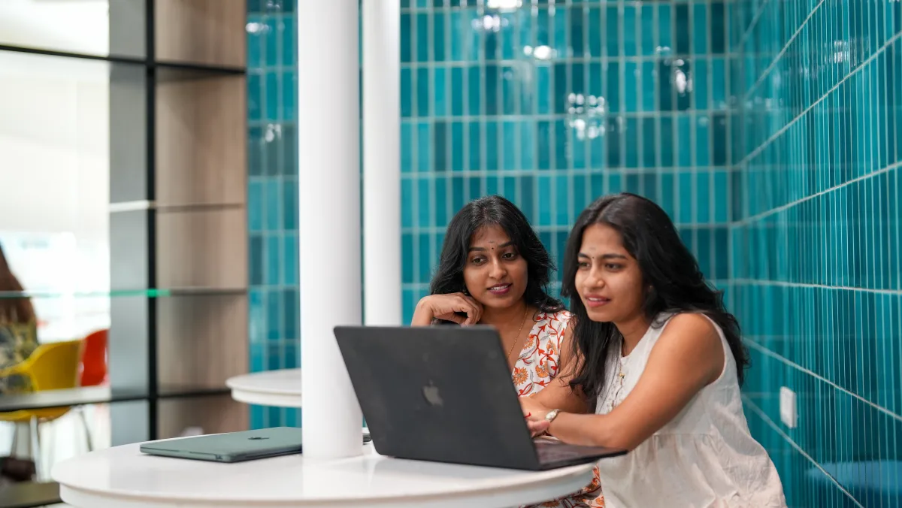
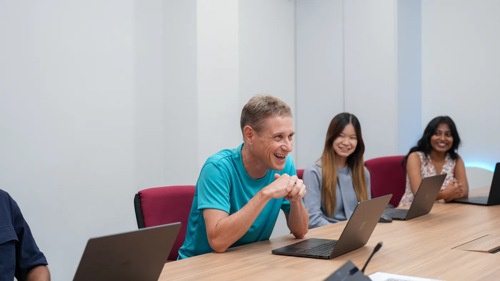
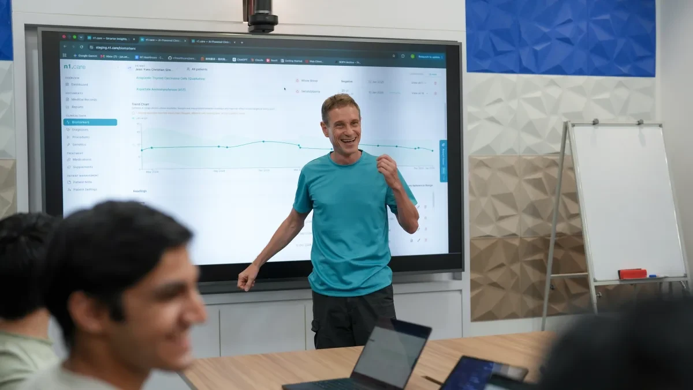

Built by people who understand the stakes.
Our mission
To give everyone AI they can trust with their health. Better decisions, more human care, and longer, healthier lives.




Our principle
What we call trusted AI
AI earns a place in health when its work is useful, its limits are clear, and you can check what it says.

How we work
AI should support better health conversations.
- 01 · Record
Bring your health history together
See your lab results, scans, notes, medicines, and wearable readings in one place.
- 02 · Evidence
Keep every source close
Follow each finding back to the record it came from and check the details yourself.
- 03 · Review
Review what matters to you
Review changes, spot gaps in your records, and bring your questions to your next health conversation.
The team
Meet the people behind digital twin.
Our team works to turn fragmented health information into a record you can understand and use.
- Every finding links back to its source record
- See how your health changes as you add new data
- Your data is encrypted and never sold
- Share only what you choose, with whom you choose